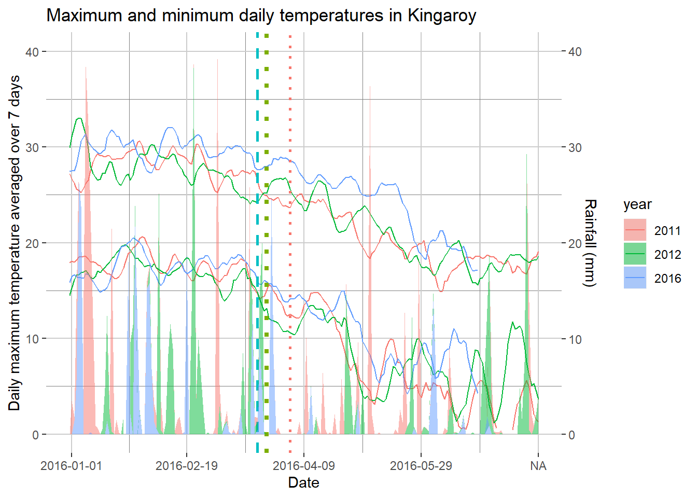
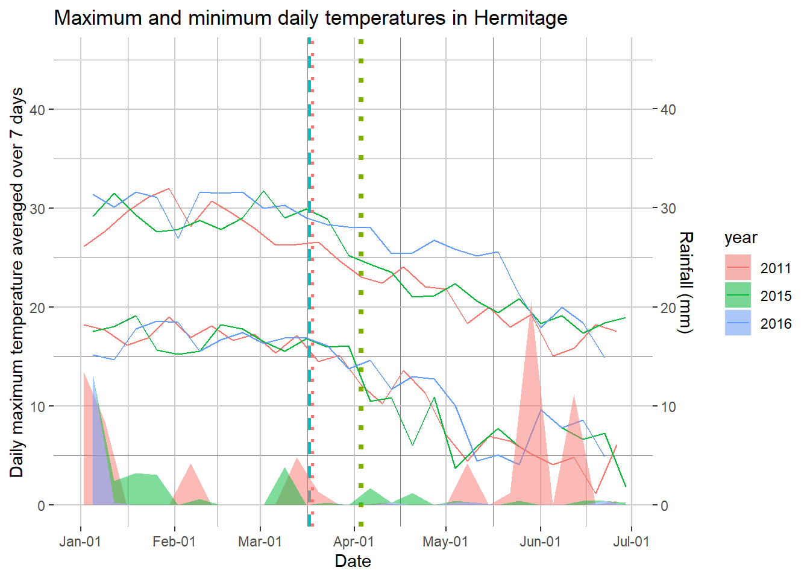
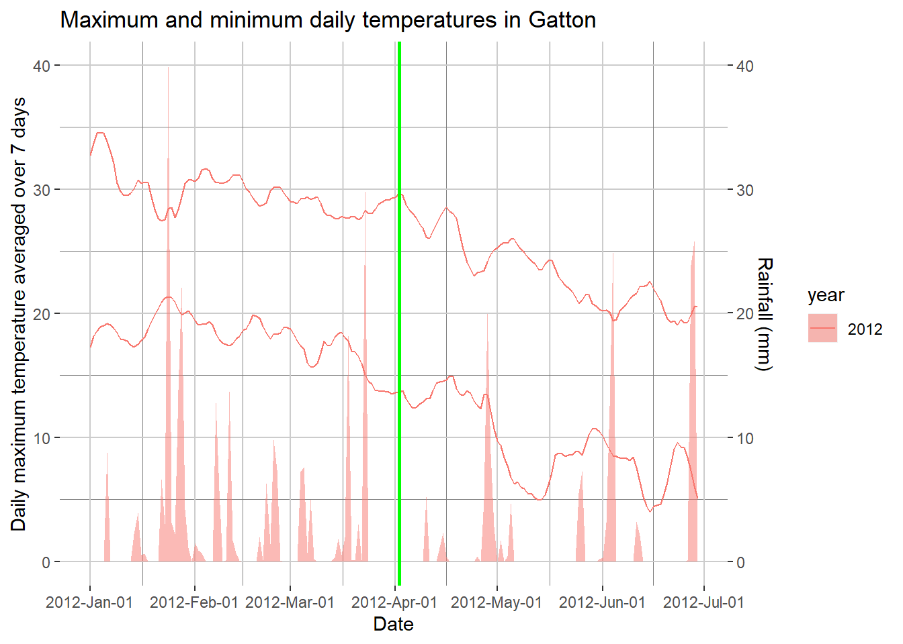

3 Weather data
The mungbean DSS determines the need to spray on:
1. The presence of the disease
2. The forecasted maximum temperatures in the next seven days
3. The number of days over the next seven days with rainfall
Below I am plotting the mean maximum temperatures over 7 days during the growing season at each mungbean trial site. The vertical lines indicate when powdery mildew was first observed in that season. Variation may exist in the sowing date of each trial.
library(ggplot2)
library(dplyr)
source("R/import_data.R")
PM.dat <- import_data() # importing means yield and disease severity for each treatment within each powdery mildew trial on mungbean
source("R/year2day.r")
source("R/gg_color_hue_function.R")
cols1 <- gg_color_hue(4)
# import data from SILO interpolated datasets downloaded from the QLD longpaddock website
silo_war_Tmax <- read.csv("./data/silo_war_Tmax.csv")
silo_king_Tmax <- read.csv("./data/silo_king_Tmax.csv")
silo_gatton_Tmax <- read.csv("./data/silo_gatton_Tmax.csv")
silo_emerald_Tmax <- read.csv("./data/silo_emerald_Tmax.csv")Lets have a look at the climate for the main field experiment sites
3.0.1 Kingaroy historical weather
## Warning: Removed 336 rows containing missing values (position_stack).## Warning: Removed 336 rows containing missing values (geom_path).
## Warning: Removed 336 rows containing missing values (geom_path).
3.0.2 Hermitage historical weather
## Warning in year == levels(factor(Herm_FS$year)): longer object length is not a
## multiple of shorter object length## Warning: Removed 52 rows containing missing values (position_stack).## Warning: Removed 53 rows containing missing values (geom_path).
## Warning: Removed 53 rows containing missing values (geom_path).
3.0.3 Gatton historical weather
## Warning: Removed 186 rows containing missing values (position_stack).## Warning: Removed 186 rows containing missing values (geom_path).
## Warning: Removed 186 rows containing missing values (geom_path).